Aim and status
Register non-contrast (N), arterial (A) and venous (V) neck CT from five patients, compute five fixed subtraction formulas, and check which give usable carotid lumen signal with this acquisition protocol.
Main finding: all five products were generated and gave the expected lumen signal in every patient. Carotid wall-imaging feasibility has not been shown.
Audit, mask, crop
Inputs checked; body masks and C1–T1 crop generated and reviewed for all five patients.
CompleteRegister N and V to A
All 10 pairs passed geometry and visual checks.
CompleteCreate five products
25/25 signed products generated and validated.
CompleteSample signal and residuals
25/25 patient–product combinations accepted at the sampled locations.
CompleteSource volumes and neck crop Complete
All 15 NIfTI volumes were checked against their DICOM geometry and HU scaling. The phases have different origins, spacing and orientation, so array indices cannot be subtracted directly; every phase is first mapped to the arterial grid. For , that grid has mm in-plane spacing on a matrix.
Timing: the DICOM injection-start field is blank for every series, so delay after injection is unknown. Only acquisition-start intervals are available: for , N→A was s and A→V was s. V is therefore not assumed to be a 150-second delayed acquisition.
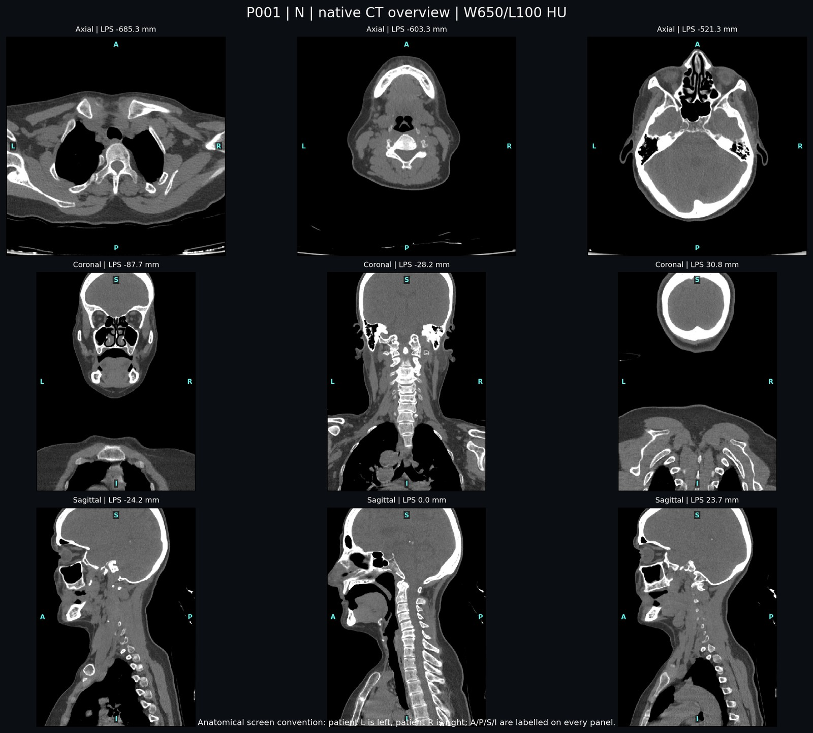
W650/L100 HU · Case note:
Neck crop
The body mask uses a −450 HU threshold, connected-component selection and hole filling, which removes the table and exterior air. TotalSegmentator located C1 and T1 on the arterial CT, and the crop runs from the top of C1 to the bottom of T1 with a 15 mm margin at each end. For this is to mm (LPS z, mm), extended to to mm. All masks and labels were non-empty, and the masks and crop were accepted on human review.
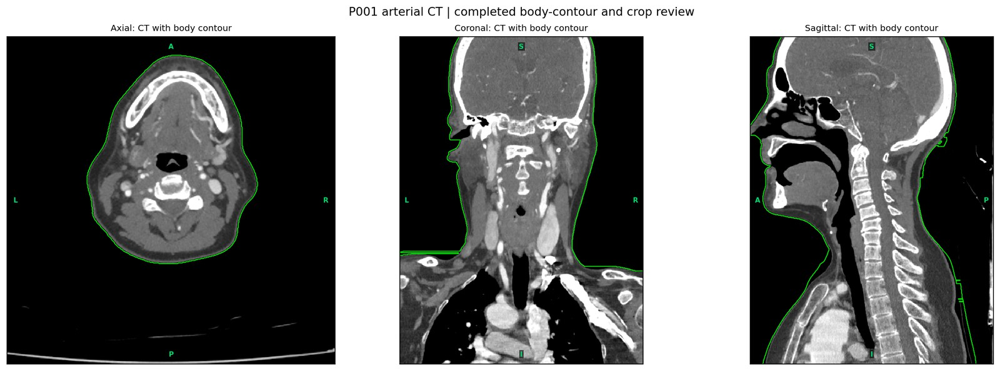
Green marks the generated body contour used to restrict registration.
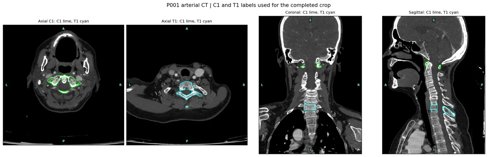
Axial through each vertebra, plus coronal and sagittal · labels define the crop boundary before the 15 mm margin
Registration to the arterial grid 10/10 pairs
A is the fixed image, so the native CTA is never interpolated. N and V were registered to it with a rigid six-parameter transform (SimpleITK, Mattes mutual information, three resolution levels) inside the body mask. Clipped intensities were used only by the optimizer; each final transform was applied once to the original HU volume with linear interpolation. Support masks record where each resampled phase has data, and their intersection is used for all arithmetic and measurements.
All N→A and V→A pairs passed transform-direction and geometry checks and were accepted on visual review. No deformable step or local rescue was needed.
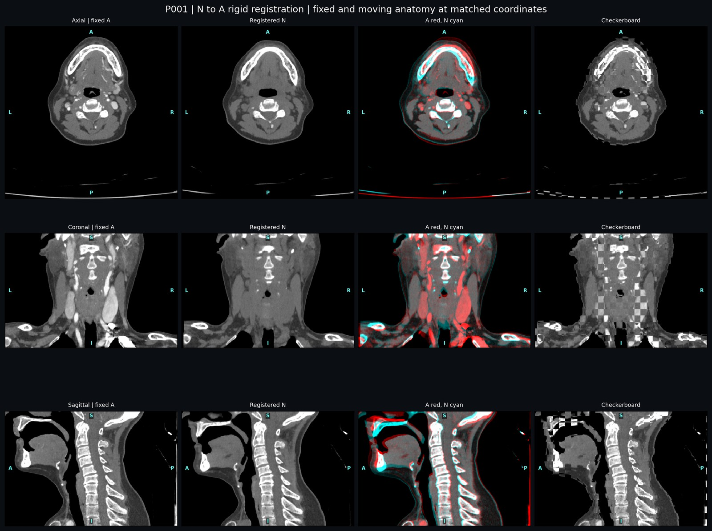
Axial, coronal and sagittal planes at matched coordinates · source panels, red/cyan overlay and checkerboard. Edges that line up across checkerboard tiles indicate good alignment.
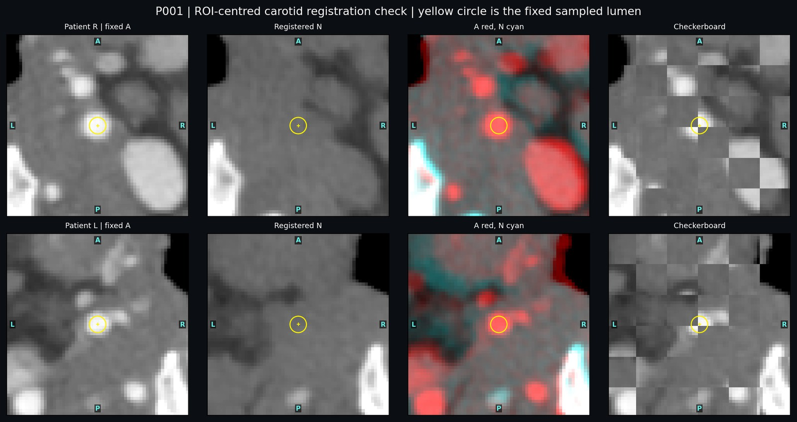
ROI-centred axial views · yellow circle marks the sampled lumen
Subtraction products 25/25 validated
Each product is voxelwise arithmetic on the shared arterial grid, with no normalization or clipping, so values stay in HU-derived units. All outputs are signed float32.
Arterial enhancement
Contrast arrival relative to baseline. Lumen is strongly positive; static tissue and bone should cancel.
Venous enhancement
Later-phase enhancement, including veins, slower-enhancing tissue and remaining arterial signal.
Temporal change
Compares the two enhanced phases. Arterial lumen is negative where A is brighter than V.
Dark lumen
N minus the arterial enhancement (after Deng et al.). Lumen is dark; bone stays bright by design.
Venous washout
V plus the A→V change (after Lu et al.). The lumen value reflects contrast washout between A and V.
Worked example for
Lumen means at the same coordinates in each phase predict the product values:
For example, 2V−A = V + (V−A) = + () = . All patients are compared in the phase table.
Products at matched anatomy
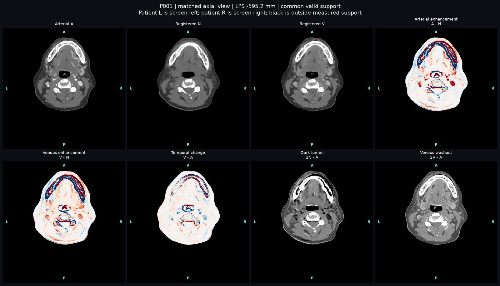
Residuals:
Display: patient left is on screen left (not radiological convention); every panel carries L/R/A/P/S/I markers. Sources W650/L100, 2N−A and 2V−A W650/L30, differences ±300 on a red (positive) / blue (negative) scale. Black means outside measured support, not 0 HU tissue.
Sampled signal and residuals Complete
Four spheres were placed on the source arterial CT of each patient: left and right carotid lumen (1.25 mm radius), paraspinal muscle (3 mm) and bone (1.5 mm). The same physical LPS coordinates were then read in N, A, V and all five products without re-centring. Every sphere lay fully inside valid support.
A product was accepted for a patient when the sampled lumen was covered, the signal had the expected sign (A−N positive; V−A negative; 2N−A and 2V−A lumen below same-product muscle) and no local artifact dominated the sampled region on visual review. All 25 patient–product combinations met these criteria. Recomputed ROI arithmetic agreed with the saved values within 0.001 HU.
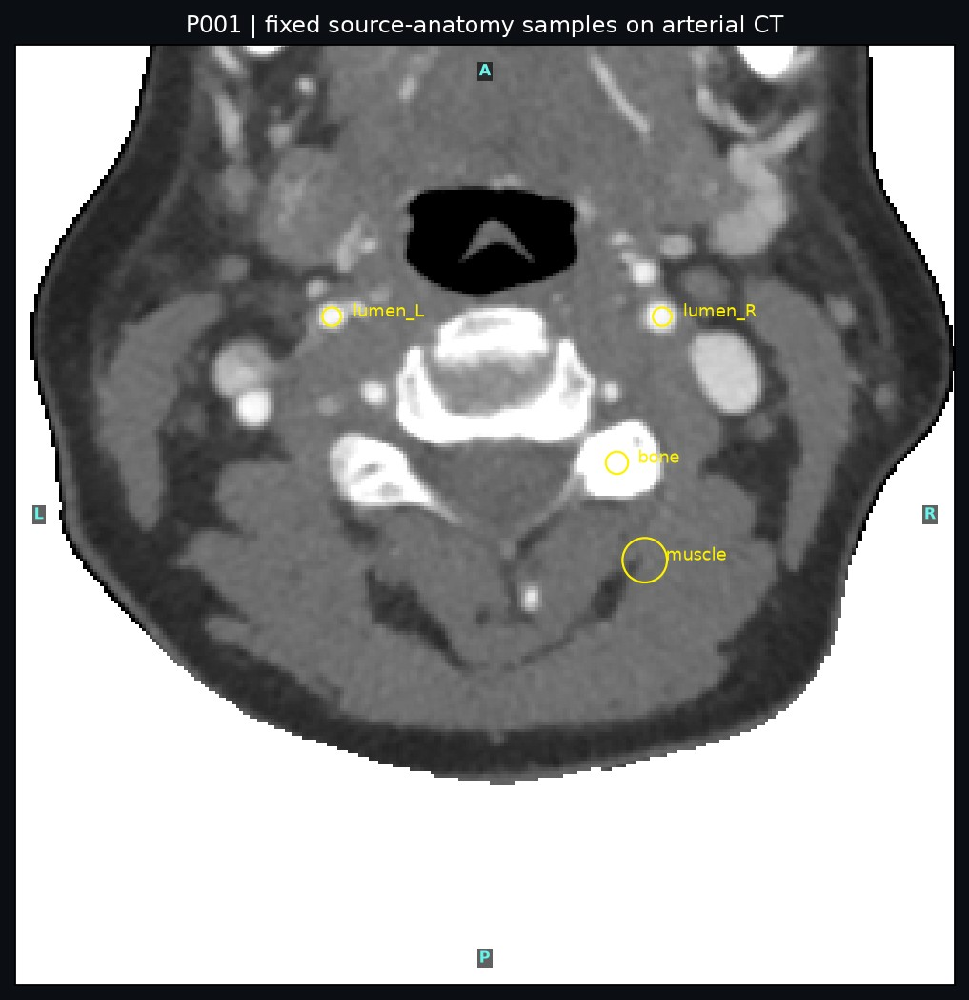
Yellow circles: left and right lumen, muscle and bone samples
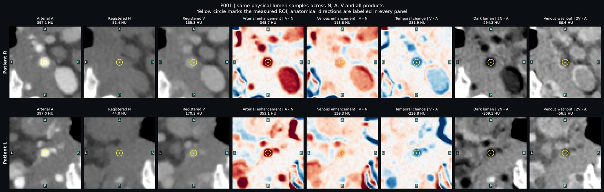
Top row patient right, bottom row patient left · mean value printed above each panel
Examples
Click an example to load that patient into every figure.
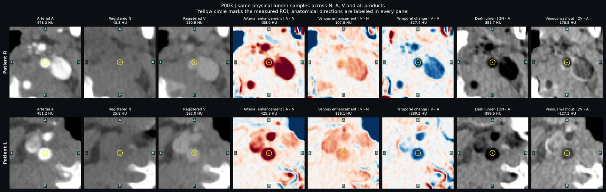
A−N 430.1 and 2N−A −395.6 at the lumen samples.
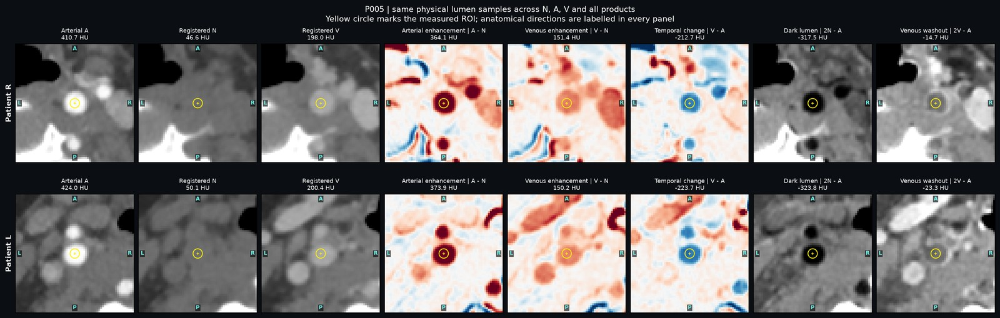
V lumen stays at 199.2 HU (V−A −218.2), so the 2V−A lumen is −19.0.
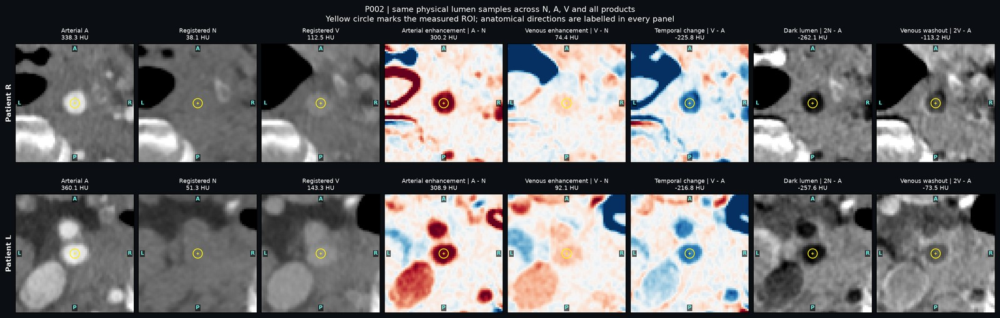
Bone and airway edges remain in the difference images; the lumen samples are unaffected.
Results
All 25 patient–product combinations were accepted (5 patients × 5 products). Values are HU-derived.
Measurements for
| Product | Formula | Lumen mean | Muscle mean ± SD | Bone mean | Bone mean abs. residual |
|---|
Lumen is the mean of the left and right sample means. Bone residual is not reported for 2N−A and 2V−A because those formulas retain bone.
Cohort
Median of the five patient-level values (range).
| Product | Lumen mean | Muscle mean | Muscle SD |
|---|---|---|---|
| A − N | 349.4 (304.5 to 430.1) | 4.1 (−6.9 to 20.6) | 28.6 (13.4 to 35.5) |
| V − N | 120.1 (75.0 to 150.8) | 21.1 (2.0 to 48.6) | 24.3 (15.4 to 45.0) |
| V − A | −229.3 (−308.3 to −218.2) | 12.3 (−2.1 to 29.8) | 28.3 (13.7 to 32.8) |
| 2N − A | −301.7 (−395.6 to −259.8) | 30.0 (0.7 to 39.2) | 38.8 (20.9 to 51.3) |
| 2V − A | −93.4 (−151.9 to −19.0) | 81.4 (32.4 to 103.8) | 37.9 (20.7 to 65.9) |
Lumen attenuation by phase
The product values follow directly from the source phases. 2N−A is N minus the arterial enhancement (A−N). 2V−A is V plus the A→V change (V−A), so its lumen value reflects washout between the two enhanced phases.
| Patient | N | A | V | A − N | V − A | 2N − A | 2V − A |
|---|---|---|---|---|---|---|---|
| P001 | 47.7 | 397.1 | 167.8 | 349.4 | −229.3 | −301.7 | −61.5 |
| P002 | 44.7 | 349.2 | 127.9 | 304.5 | −221.3 | −259.8 | −93.4 |
| P003 | 34.5 | 464.7 | 156.4 | 430.1 | −308.3 | −395.6 | −151.9 |
| P004 | 47.1 | 380.5 | 122.1 | 333.3 | −258.3 | −286.2 | −136.2 |
| P005 | 48.4 | 417.4 | 199.2 | 369.0 | −218.2 | −320.6 | −19.0 |
Patient-level lumen means (HU). Click a row to select that patient.
Relation to published methods
| Formula | Published method | This study |
|---|---|---|
| 2N − A | Deng et al.: registered CTA subtracted from non-contrast CT, then non-contrast CT added back. | Same arithmetic, computed on the arterial grid rather than the non-contrast grid. |
| 2V − A | Lu et al.: delayed phase 150 s after injection, combined with the arterial phase on a vendor workstation. | Unit-weight formula on the routine venous phase. Injection-relative timing is unknown; A and V acquisition starts were 40–45 s apart. |
Limitations
- Five patients; technical pilot evidence only.
- Lumen, muscle and bone samples were placed with AI assistance. Exact bifurcation, common carotid, wall and plaque locations were not expert-localized.
- Registration was accepted on visual review and vertebral centroid checks; local landmark error was not measured.
- Residual bone, airway and perivascular edges remain in the difference images (highest in P002, up to 310.6 HU mean absolute residual). Their causes were not isolated.
- Common three-phase coverage was 92.3–98.8% of the arterial body within the crop. P004 loses about 16 mm inferiorly and P005 about 10 mm superiorly; carotid coverage in those margins was not checked separately.
- Venous-phase timing after injection is unknown.
- Muscle SD includes interpolation correlation and tissue heterogeneity, not scanner noise alone.
- Wall visibility, wall-to-lumen contrast, plaque and diagnostic performance were not measured.
Software and parameters
| Component | Version |
|---|---|
| Python | 3.12.7 |
| SimpleITK | 2.5.6 |
| NumPy | 1.26.4 |
| Matplotlib | 3.9.2 |
| TotalSegmentator | 2.18.0 (task "total") |
| pydicom (DICOM audit) | 3.0.2, Python 3.12.2 |
| Parameter | Value |
|---|---|
| Registration | rigid, 6 DOF, Mattes MI |
| Random seed | 20260913 |
| Body threshold | −450 HU |
| Crop margin | 15 mm each end |
| Interpolation | linear (HU), nearest (labels) |
Acquisition: 120 kVp, kernel SB, 1 mm slices at 0.5 mm interval, 512×512 matrix, 0.465–0.549 mm in-plane spacing.
Validation: the stage validators passed for all five stages, and the body masks and crop were
accepted on human review. The synthetic tests in scripts/ run without patient data.
Figures are JPEG renderings labelled with study codes only. Source DICOM/NIfTI data and review records are not distributed.
References
- Lu Y, Cao R, Jiao S, et al. A novel method of carotid artery wall imaging: black-blood CT. Eur Radiol. 2024;34(4):2407–2415. doi:10.1007/s00330-023-10247-5
- Deng C, Wang X, Zhu R, Wu S. A radiomics model based on CTA subtraction imaging for differentiating symptomatic and asymptomatic carotid plaques: a retrospective study. BMC Cardiovasc Disord. 2026;26. doi:10.1186/s12872-026-06045-8
- Wasserthal J, Breit HC, Meyer MT, et al. TotalSegmentator: robust segmentation of 104 anatomic structures in CT images. Radiol Artif Intell. 2023;5(5):e230024. doi:10.1148/ryai.230024
- Lowekamp BC, Chen DT, Ibáñez L, Blezek D. The design of SimpleITK. Front Neuroinform. 2013;7:45. doi:10.3389/fninf.2013.00045